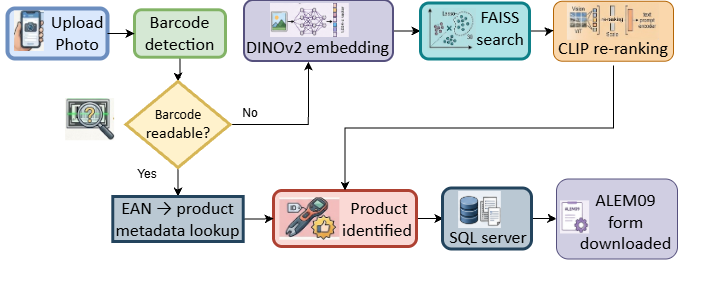

FEATURED / 01
AI-Assisted Industrial Product Identification
An AI system that identifies industrial products from a single photo taken in the field. It first tries to read the product's barcode directly; if that fails, it falls back to a visual pipeline — DINOv2 generates an embedding for the photo, FAISS searches a catalogue of thousands of product images for the closest matches, and CLIP re-ranks those candidates for a confident final match. Once identified, the system checks warranty eligibility and downloads a pre-filled claim form — turning a manual, multi-step lookup into a single upload.
50%Recall@1
75%Recall@5